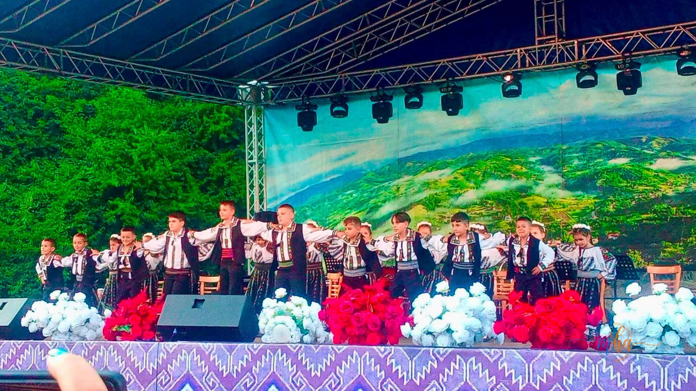
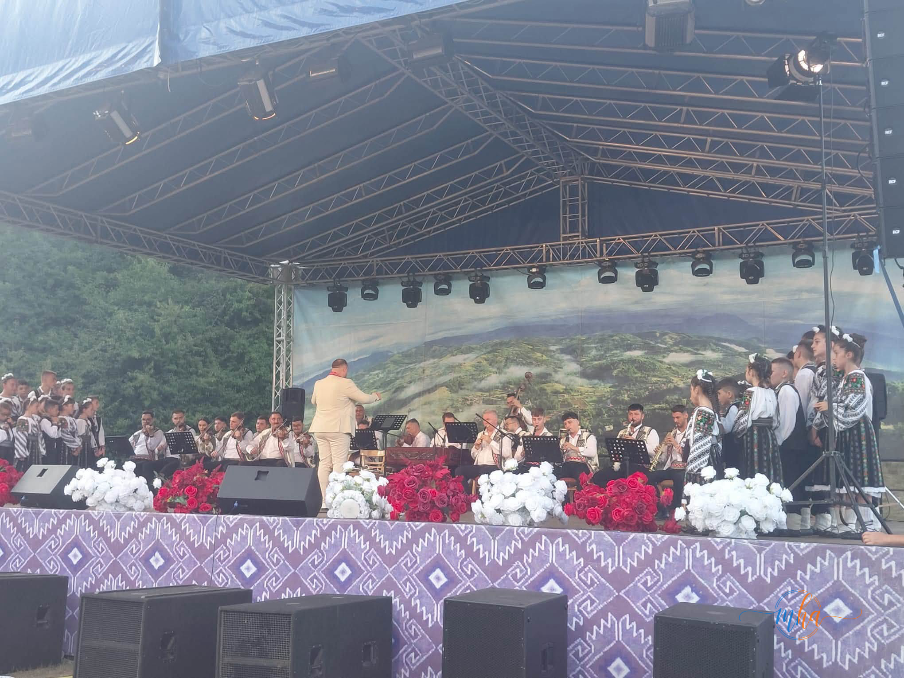
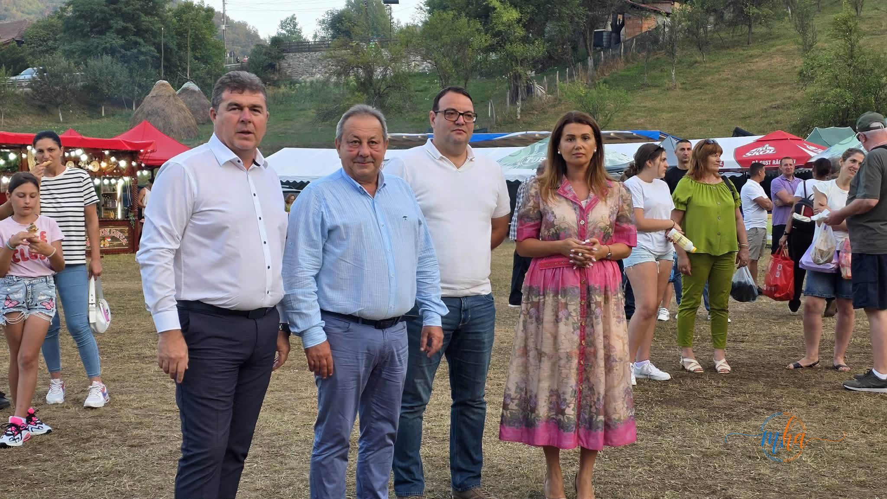
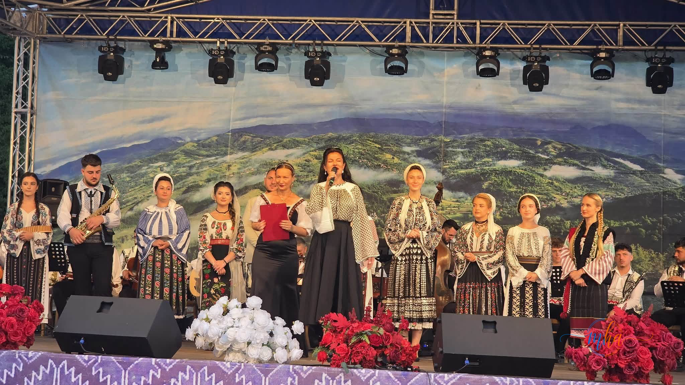
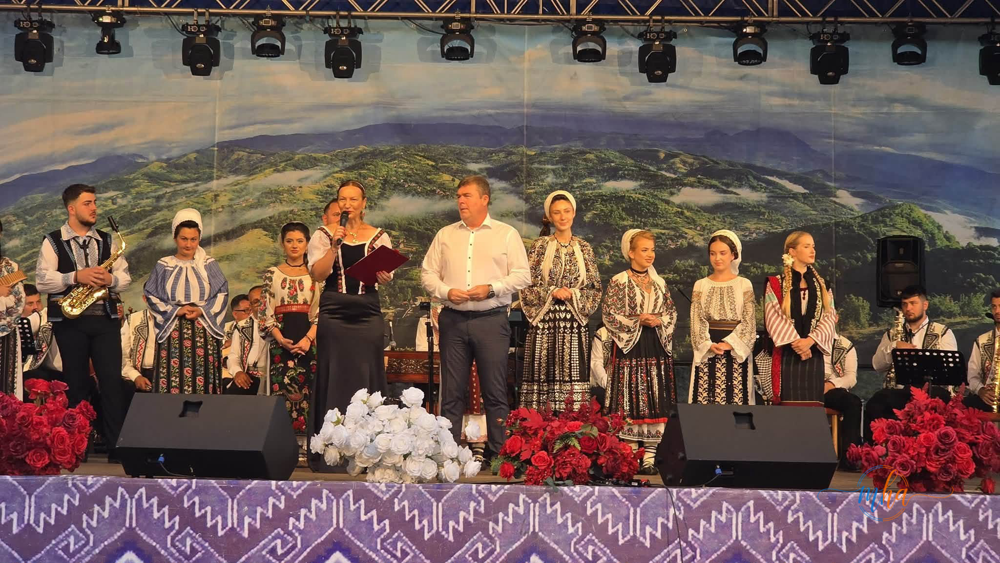
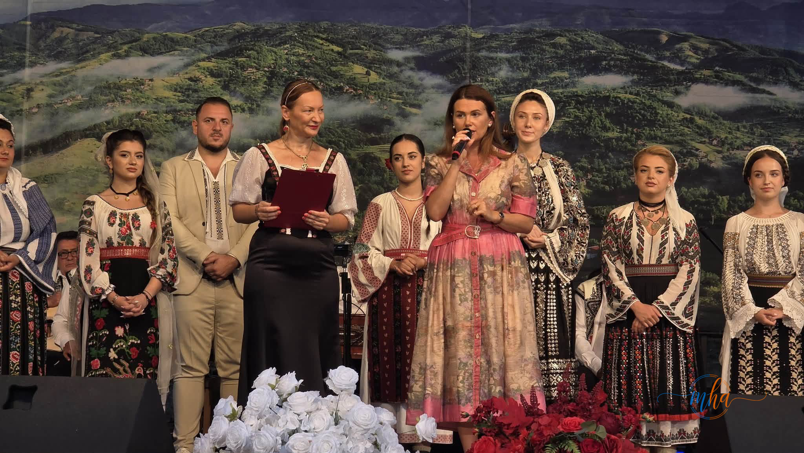
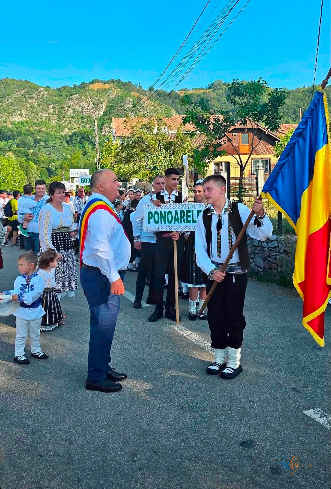
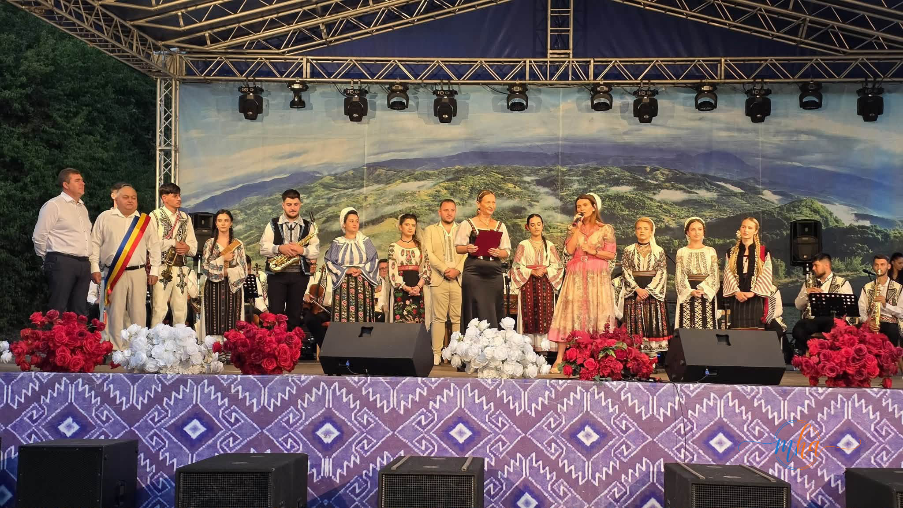
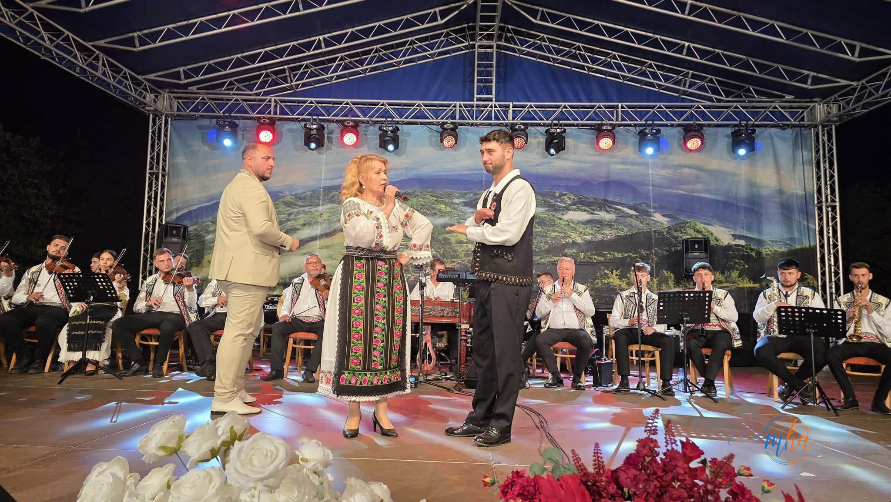
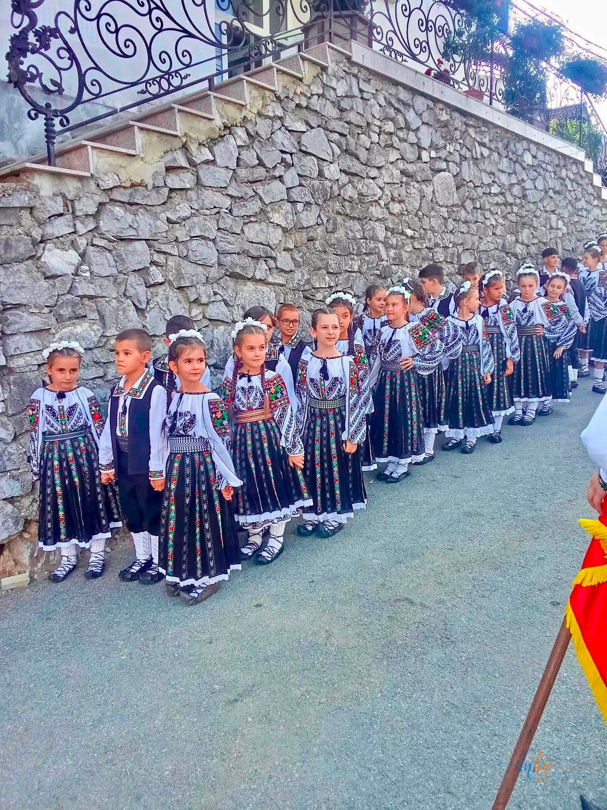

Festivalul Național Concurs de Folclor „Ponoare, Ponoare” și-a desemnat laureații ediției a XX-a. Trofeul a ajuns în județul Suceava
PONOARE, MEHEDINȚI – Cea de-a XX-a ediție a Festivalului Național Concurs de Folclor „Ponoare, Ponoare” s-a încheiat duminică seara într-o atmosferă de sărbătoare, după trei zile dedicate tradițiilor autentice românești, muzicii populare și promovării tinerelor talente din folclorul românesc. Evenimentul, devenit una dintre cele mai importante manifestări culturale din județul Mehedinți, a reunit interpreți din numeroase județe ale țării, alături de mii de spectatori care au ales să petreacă un sfârșit de săptămână în inima Geoparcului Platoul Mehedinți, la Ponoarele.
Festivalul „Ponoare, Ponoare” reprezintă de două decenii un reper pentru promovarea cântecului popular autentic și a valorilor culturale tradiționale. De la o ediție la alta, manifestarea și-a consolidat statutul de competiție națională de prestigiu, oferind tinerilor interpreți oportunitatea de a-și demonstra talentul în fața unui juriu format din specialiști în domeniul folclorului și al muzicii populare.
Trofeul festivalului a fost câștigat de Gabriela Șuhani
Momentul cel mai așteptat al serii de gală a fost desemnarea câștigătorului marelui trofeu. În urma prestațiilor din concurs și a deliberărilor juriului, Trofeul Festivalului Național Concurs de Folclor „Ponoare, Ponoare” – ediția a XX-a a fost acordat interpretei Gabriela Șuhani, din județul Suceava.
Tânăra artistă a impresionat atât membrii juriului, cât și publicul prezent prin autenticitatea interpretării, calitatea vocală, expresivitatea artistică și respectul față de tradițiile populare românești. Distincția confirmă valoarea unei noi generații de interpreți care contribuie la păstrarea și promovarea patrimoniului cultural național.
Trei zile dedicate folclorului românesc autentic
Pe parcursul celor trei zile de festival, comuna Ponoarele a devenit punctul central al folclorului românesc. Interpreți, ansambluri folclorice și invitați speciali au urcat pe scenă, oferind publicului spectacole de înaltă ținută artistică.
Evenimentul a adus împreună participanți din mai multe zone etnografice ale României, fiecare prezentând specificul tradițiilor locale prin cântec, port popular și obiceiuri autentice. Diversitatea repertoriului și frumusețea costumelor populare au transformat festivalul într-o adevărată lecție despre identitatea culturală românească.
Pe lângă competiția artistică, festivalul a oferit vizitatorilor ocazia de a descoperi frumusețea naturală a comunei Ponoarele, una dintre cele mai spectaculoase destinații turistice din județul Mehedinți, cunoscută pentru fenomenele sale carstice și pentru peisajele deosebite.
Concurenți talentați din întreaga țară
Nivelul competiției a fost unul ridicat, fiecare concurent demonstrând pregătire artistică, respect pentru tradițiile populare și dorința de a duce mai departe moștenirea culturală românească.
Juriul a avut o misiune dificilă în stabilirea clasamentului final, diferențele dintre concurenți fiind foarte mici. Toți participanții au contribuit la succesul ediției aniversare, oferind publicului momente artistice apreciate și îndelung aplaudate.
Festivalul confirmă încă o dată faptul că în România există numeroși tineri interpreți care continuă să promoveze muzica populară autentică și valorile tradiționale.
Organizare apreciată
Succesul ediției aniversare se datorează implicării organizatorilor și partenerilor instituționali care au făcut posibilă desfășurarea evenimentului în condiții excelente.
Organizarea a fost asigurată de Primăria și Consiliul Local Ponoarele, împreună cu Centrul Cultural „Nichita Stănescu”, beneficiind de sprijinul autorităților locale și al comunității.
Primarul comunei Ponoarele, Georgică Pătrașcu, a subliniat importanța continuării acestui festival, devenit o tradiție pentru județul Mehedinți și un punct de atracție pentru iubitorii folclorului din întreaga țară.
Un festival care promovează identitatea românească
Festivalul Național Concurs de Folclor „Ponoare, Ponoare” și-a depășit de mult statutul de simplă competiție muzicală. Evenimentul reprezintă o adevărată sărbătoare a culturii populare românești, contribuind la păstrarea și transmiterea tradițiilor către noile generații.
Prin promovarea interpreților tineri și prin valorificarea patrimoniului cultural imaterial, festivalul joacă un rol important în conservarea identității naționale și în încurajarea respectului pentru folclorul autentic.
An de an, edițiile festivalului demonstrează că muzica populară românească rămâne vie, iar interesul publicului pentru tradiții este la fel de puternic.
Ponoarele, una dintre destinațiile turistice reprezentative ale Mehedințiului
Pe lângă componenta culturală, festivalul contribuie și la promovarea turistică a comunei Ponoarele și a nordului județului Mehedinți. Zona este recunoscută la nivel național pentru obiective naturale spectaculoase precum Podul lui Dumnezeu, Lacul Zăton și Câmpurile de Lapiezuri, atrăgând anual mii de turiști din România și din străinătate.
Organizarea unor evenimente culturale de amploare, precum Festivalul Național Concurs de Folclor „Ponoare, Ponoare”, completează oferta turistică a zonei și contribuie la dezvoltarea comunității locale.
Folclorul românesc merge mai departe
Ediția aniversară cu numărul XX a demonstrat încă o dată că tradițiile românești continuă să fie respectate și promovate de o nouă generație de interpreți talentați. Succesul festivalului confirmă faptul că muzica populară autentică rămâne un simbol al identității naționale și un patrimoniu care merită păstrat și transmis generațiilor viitoare.
Trofeul din acest an pleacă în județul Suceava, însă câștigători sunt, de fapt, toți cei care iubesc și promovează folclorul românesc. Festivalul „Ponoare, Ponoare” își consolidează astfel locul între cele mai importante manifestări culturale dedicate muzicii populare din România și promite să revină anul viitor cu o nouă ediție spectaculoasă.
Galerie foto









